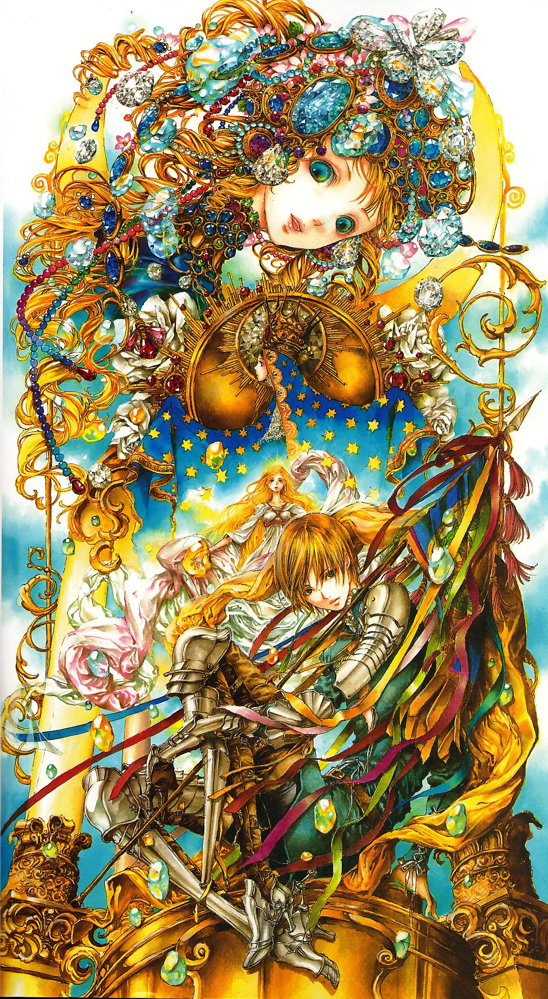
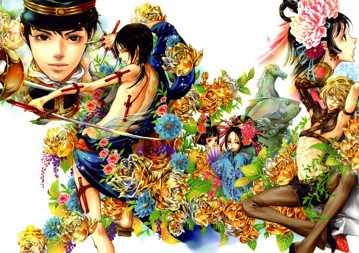

Art by Nao Tsukiji
Welcome to our digital art gallery!

Reference = Nao Tsukiji
Digital art is artistic work created, modified, or presented using digital technology, such as computers, software, tablets, or, smartphones. Emerging in the 1960s, it encompasses diverse forms like digital painting, 3D modeling, pixel art, and animation.
